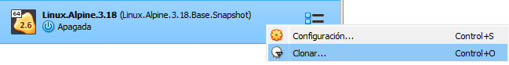
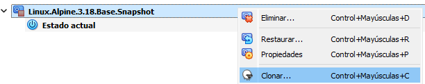
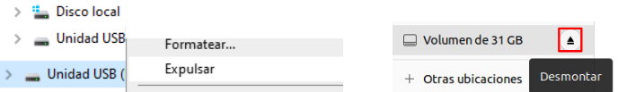
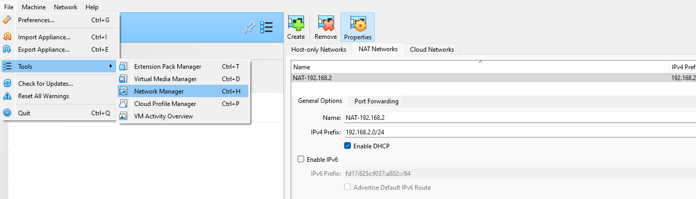
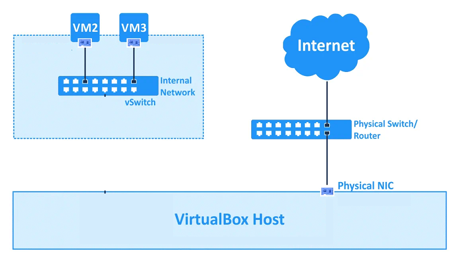

MÁQUINAS VIRTUALESs
VIRTUALIZACIÓN
En este mundo empresarial moderno, el trabajo en red es un componente crucial de la interacción de operaciones informáticas.
Una de las ideas centrales detrás de la virtualización de hardware es la posibilidad de utilizar máquinas virtuales (VM) en casi todos los casos en los que los ordenadores físicos también pueden utilizarse. Por tanto, las máquinas virtuales deben poder conectarse a redes físicas y virtuales con sus adaptadores de red virtuales.
Al mundo de las máquinas virtuales en la máquina física o real se le llama anfitrión o HOST y en cada una de las máquinas virtuales (VM) se le llama invitado o GUEST.
El término virtualización en un contexto informático se utiliza para referirnos a la creación mediante software de una versión virtual de algún recurso tecnológico como una plataforma de hardware, un sistema operativo, un dispositivo de almacenamiento u otros recursos de red.
El software de virtualización implementa lo que se llama Hipervisor o Virtual Machine Monitor (VMM) que consiste en una capa de abstracción entre el hardware de la máquina física (host, anfitrión) y la máquina virtual (MV) formada por hardware y software virtualizado, haciendo el papel de centralita entre lo real y lo virtualizado.
Esta capa de software, el hypervisor o VMM, maneja, gestiona y arbitra los cuatro recursos principales de un ordenador (CPU, memoria, almacenamiento y conexiones de red) y así podrá repartir dinámicamente estos recursos entre todas las MMVV creadas en el ordenador anfitrión. Esto permite que se puedan tener varias MMVV ejecutándose en el mismo ordenador físico.
Existen muchos tipos de herramientas de virtualización:
- VMware
- QEMU
- Hyper-V
- VirtualBox (VB)
VIRTUALBOX
CARACTERÍSTICAS
VirtualBox (VB) es un software de virtualización de tipo 2 en el que los usuarios pueden cargar múltiples Sistemas Operativos invitados a un solo Sistema Operativo anfitrión. Cada invitado se puede configurar, iniciar, pausar o detener de forma independiente. El Sistema Operativo anfitrión y los Sistemas Operativos invitados pueden comunicarse entre sí a través de una serie de mecanismos, entre ellos uno lleva papeles común, carpetas compartidas, arrastrando y soltando archivos, etc.
Algunas características importantes de VB son las siguientes:
- Multiplataforma: Puede ser instalado en varios Sistemas Operativos de 32 y 64 bits, como Windows, GNU/Linux, Mac OS X y Solaris.
- Multihost: Puede virtualizar múltiples Sistemas Operativos de 32 y 64 bits, como Windows 8, Windows 7, Windows XP, ..., Debian, Ubuntu, OpenSuSe, ..., OS/2, Mac OS X, DOS, Solaris, etc.
- Es software libre, utiliza la licencia GPLv2, aunque algunos componentes son gratuitos con licencia PUEL.
- Portabilidad: VB funcionalmente es muy parecido a todas las plataformas donde se puede ejecutar, de ahí que se puedan llevar MMVV entre ellas, es decir, se puede crear una MV en Windows y después ejecutarla en GNU/Linux. Además, las MMVV pueden ser fácilmente importadas y exportadas utilizando el Open Virtualization Format (OVF), un estándar creado a tal fin. Incluso puede importarse en este formato MMVV que fueron creadas con un software de virtualización diferente.
- Virtualización hardware: Aunque en ocasiones no es necesaria, es muy conveniente activar la virtualización hardware.
- Guest additions: son paquetes de software que se pueden instalar en el interior de los sistemas invitados compatibles para mejorar su rendimiento y proporcionar una mejor comunicación con el sistema anfitrión. Después de instalar las Guest Additions en una MV, ésta mejorará en los siguientes aspectos:
- Integración del puntero del ratón, evitando que se tenga que hacer clic sobre la ventana de la MV para que el ratón se le asigne a ésta. Simplemente poniendo el ratón sobre la ventana de la MV ya lo tendrá.
- Carpetas compartidas entre el sistema principal y el invitado para intercambiar archivos.
- Mejora de las características gráficas de la MV, permitiendo el redimensionamiento automático de la interfaz gráfica del SO invitado cuando se modifica el tamaño de la ventana de la MV.
- Modo fluido de las ventanas. Con este modo, las ventanas individuales abiertas sobre el escritorio del invitado se integran con las ventanas abiertas del anfitrión, dando la sensación de que las aplicaciones del invitado se están ejecutando en el anfitrión.
- Sincronización automáticamente de la hora de la MV con el equipo anfitrión
- Compartir el portapapeles entre el anfitrión y el invitado.
- Instantáneas (snapshots): Se pueden guardar instantáneas arbitrarias del estado actual de la MV, permitiendo volver atrás en el tiempo, restaurando la MV al estado congelado por la instantánea y empezando así una configuración alternativa de la MV a partir de ahí.
- Grupos de MMVV: VB permite al usuario organizar las MMVV colectivamente, así como individualmente. En general, las operaciones que se pueden realizar con los grupos son las mismas que con las MMVV independientemente, es decir: iniciar, pausar, reiniciar, detener, etc. También puede crear otros grupos en un grupo.
- Permite montar imágenes ISO sobre las unidades de CD o DVD evitando el uso de los CDs y DVDs físicos.
ADMINISTRADOR
Cuando se ejecuta VB aparece la ventana del administrador:

A la izquierda, se puede ver un panel que después mostrará una lista con todas las Maquinas Virtuales. Como no se ha creado ninguna, la lista está vacía. La fila de botones de la parte superior permite crear nuevas Maquinas Virtuales y trabajar con las existentes. El panel de la derecha muestra por secciones las propiedades de la Maquina Virtual que estuviera seleccionada y su árbol de instantáneas.
A continuación se muestra la ventana del administrador de VB con diversas Maquinas Virtuales organizadas en grupos, posibilidad muy interesante.

Cabe decir, VirtualBox también se puede administrar mediante la siguiente herramienta de consola:
OPERACIONES CON MAQUINAS VIRTUALES
Algunas operaciones que se pueden realizar con las Maquinas Virtuales son
- Crear máquinas virtuales.
- Instalar un sistema operativo en la máquina virtual.
- Ejecutar, Detener o Pausar una maquina virtual
- Exportar una máquina virtual
- Importar una máquina virtual
- Tomar una instantánea de una maquina virtual
- Clonar una máquina virtual
- Agrupar máquinas virtuales
- Eliminar máquinas virtuales
CREAR MAQUINA VIRTUAL
Ejecutaremos la opción Menú->Machine->New
Debemos poner un nombre a la Máquina Virtual y elegir el tipo de Sistema Operativo que instalaron en la máquina, así como la versión del mismo. Estos datos son importantes por la virtualización hardware. Una vez pulsando continuar nos preguntará por el tipo de disco virtual a utilizar. Hay varios tipos, por defecto VDI (VirtualBox Disk Image)
INSTALAR S.OP. EN UNA MAQUINA VIRTUAL
Para poder instalar un sistema operativo en la maquina virtual debemos tener el archivo iso correspondiente a dicho sistema y configurar la maquina para iniciar con el iso.
Para configurar la máquina y arrancar con la ISO utilizaremos la opción:
- Menu->Machine->Settings-Storage
Utilizando la opción del disco óptico y seleccionan la opción disk file. En esta opción podemos buscar el archivo iso que utilizaron para la instalación del sistema operativo cuando la maquina se inicie. Una vez instalado el sistema en la máquina debemos quitar el iso desde la opción Menú->Machine->Settings->Storage. Utilizamos la opción del disco óptico y seleccionamos la opción Remove disk from Virtual Drive.

EJECUTAR, PARAR, PAUSAR UNA MAQUINA VIRTUAL
Se deben ejecutar las siguientes opciones:
- Menu->Machine->Start
- Menu->Machine->Pause
- Menu->Machine-Close
EXPORTAR UNA MAQUINA VIRTUAL
Se pueden exportar las máquinas virtuales para ser utilizadas con Virtualbox en otros hosts. Por ejemplo, exportar la maquina del aula para importarla luego en casa. Para poder exportar máquinas virtuales primero hay que instalar el paquete de extensión de virtualbox. Una vez instalada dicha extensión accederemos a la opción:
- Menu->Machine->Export ó Menu->File->Export Appliance

Existen diferentes formatos para exportar la máquina virtual, uno de los más utilizados es Open Virtualization Format. Este formato permite tanto los archivos de extensión OVF como OVA. Normalmente utilizaron OVA, ya que genera un único archivo.
IMPORTAR UNA MAQUINA VIRTUAL
Se pueden importar las máquinas virtuales (archivos OVA o OVF) que han sido exportadas en otros hosts, en la siguiente opción:
- Menu->File->Import Appliance
INSTANTANEA DE UNA MAQUINA VIRTUAL
Las instantáneas (snapshots) realizan una copia del estado actual de una Maquina Virtual para poder volver a él en cualquier otro momento. A partir de dicho instante se crea otra línea temporal de la Maquina Virtual. Un caso típico de uso de instantáneas es cuando pretendemos probar un nuevo software, por eso antes de modificar nada, hacemos una instantánea de la Maquina Virtual y después ya instalamos el software, lo configuramos, lo probamos y si hay problemas o no nos gusta, utilizamos la instantánea para volver al estado en que estábamos antes de empezar la instalación. Para manejar las instantáneas, cada Maquina Virtual tiene su sección. Se accede pulsando el botón superior derecho titulado Instantánea, junto al botón Detalles.
Las instantáneas se pueden crear con la Maquina Virtual apagada, tomando sobre el icono de la máquina fotográfica en el administrador de VirtualBox, o encendido, del mismo modo o pulsando sobre el menú Máquina -> Tomar instantánea. Las instantáneas se realizan siempre a partir del estado actual de la Maquina Virtual, y para cada una se crea un nuevo disco en el que se irán guardando todos los cambios producidos a partir de ese momento. En la carpeta de la Maquina Virtual se pueden ver estos discos. Al crear una instantánea se nos pide un nombre para ella y una descripción, que es aconsejable rellenar, cómo poner un nombre significativo.
CLONACION DE UNA MAQUINA VIRTUAL
La clonación de una Maquina Virtual consiste en realizar una nueva Maquina Virtual exactamente igual a la primera pero con identidad diferente, ya que los discos virtuales tendrán números de identificación (uuid) diferentes, de esta manera la Maquina Virtual original o base y la clonada se podrían ejecutar en el mismo ordenador.
Se puede acceder a la clonación desde el menú contextual de la máquina (click derecho) o desde la propia toma de instantáneas de la máquina.
Clonación desde la maquina.

Clonación desde la instantánea.

Independientemente del punto de inicio para la clonación nos aparecerá la siguiente pantalla donde podremos poner un nombre a la nueva máquina y elegir entre clonación completa o enlazada

- La clonación completa crea una maquina totalmente independiente a partir de la maquina base. En este caso no se genera ninguna instantánea de la maquina base.
- La clonación enlazada crea una maquina que depende de la maquina base. No se puede utilizar la maquina enlazada sino tenemos la maquina base. Las máquinas enlazadas ocupan mucho menos espacio en el disco duro, ya que en realidad se basan en el uso de instantáneas. Al crear una clonación enlazada se realiza una instantánea de la maquina base.
"Clonación enlazada desde instantánea"
Si en lugar de realizar la clonación enlazada desde la maquina virtual lo hacemos desde una instantánea, no se creará una nueva instantánea a partir del estado actual de la máquina sino que utilizará dicha instantánea para asociarla a la maquina clonada. Esto supone un ahorro de espacio en disco y en la gestión de las instantáneas.
Normalmente la política de direccionamiento MAC se marca con la opción de generar nuevas direcciones MAC para los adaptadores IP, sin embargo existen otras opciones. Los campos mantener nombres de disco y UUIDS hardware se desmarcan para la mayoría de las clonaciones.
AGRUPACIÓN DE MAQUINAS VIRTUALES
VirtualBox permite que las Maquinas Virtuales se organicen en grupos, y a éstos se les pueden aplicar las operaciones típicas que se encuentran en el menú Máquina y afectarían a todas las MMVV del grupo: Iniciar, Pausar, Reiniciar, Cerrar, Guardar estado, Apagado ACPI, Apagar , Muestra el navegador y Crear un acceso directo.
Podemos crear un nuevo grupo con el menú contextual (click derecho) de las máquinas que desean agrupar. Es conveniente poner un nombre significativo en el grupo que se crea.

Arrastrando las Maquinas Virtuales se pueden cambiar de grupos o se pueden desagrupar si arrastramos la Maquina Virtual a ningún grupo. Los grupos que se quedan vacíos desaparecen automáticamente. Los grupos también pueden arrastrarse sobre otros grupos, pero hay que soltarlos sobre el título del grupo y no sobre el interior del grupo. Todas las Maquinas Virtuales de un grupo se pueden desagrupar al mismo tiempo haciendo clic sobre la opción Desagrupar del menú contextual del grupo. En ese caso, el grupo al quedar vacío, desaparecerá.
Pulsando sobre la flecha derecha que aparece en el título de los grupos, junto al número que posee, se consigue que se escondan el resto de los grupos y sólo se vean las Maquinas Virtuales del grupo sobre el que se apretó. Para volver a ver todos los grupos, simplemente pulsaríamos la fecha izquierda, opuesta a la anterior. Pulsando doble clic sobre el título de los grupos, éstos se recogen o despliegan de forma alternativa.
USO DEL USB EN UNA MAQUINA VIRTUAL
En VirtualBox existe la posibilidad de capturar en la máquina virtual (guest) una memoria USB que esté conectada al ordenador host. En la configuración de la máquina virtual, en la opción USB podemos marcar un dispositivo USB de la máquina host para que se pueda tomar el control desde la máquina virtual.

Una vez que hemos seleccionado la unidad usb el sistema operativo de la maquina virtual debe ser capaz de montar la unidad.
SISTEMAS CON ENTORNO GRÁFICO
En los sistemas operativos con entorno gráfico o de escritorio como Windows 10 o Ubuntu Desktop, normalmente, la usb es detectada y montada automáticamente por el sistema sin necesidad de intervención del usuario. En este caso se pueden utilizar comandos o cualquier utilidad gráfica para copiar y pegar archivos, crear carpetas, etc... Para desmontar la unidad se procederá según las opciones del entorno gráfico.
Ejemplo.

SISTEMA SIN ENTORNO GRÁFICO LINUX
En los sistemas operativos sin entorno gráfico o de escritorio de tipo Linux como Linux Alpine, Linux Debian 11, ..., la usb debe ser montada y desmontada por el usuario.
- Identificar la unidad y tipo de archivo en el que se detecto la usb. Utilizaremos el comando
blkid.
blkid
blkid
/dev/sda3: UUID="6ca19fcf-0c85-..." BLOCK_SIZE="4096" TYPE="ext4" PARTUUID="48aa03bd-03"
/dev/sda1: UUID="c05b3fa5-05e8-..." BLOCK_SIZE="1024" TYPE="ext4" PARTUUID="48aa03bd-01"
/dev/sda2: UUID="afa14f53-b35c-..." TYPE="swap" PARTUUID="48aa03bd-02"
/dev/sdb1: LABEL="DESPLIEGUE" UUID="5823-4CDB" BLOCK_SIZE="512" TYPE="vfat" PARTLABEL="Main Data Partition" PARTUUID="97bcbb2e-8136-..."
- Sino existe crear el directorio para montar el usb. Utilizaremos el comando
mkdir /mnt/usb.
mdkir
mkdir /mnt/usb
- Montar el dispositivo usb. Utilizaremos el comando
mount -t [type] /dev/[device] /mnt/usb. Los datos [type] y [device] los habremos obtenido del comandoblkid
mount
mount -t vfat /dev/sdb1 /mnt/usb
- Utilizar el directorio /mnt/usb con los comando habituales para manejo de ficheros
ls, cp, rm, ...
cp
cp /mnt/usb/script.sh ~/scripts/
- Desmontar la unidad usb. Utilizaremos el comando
umount /mnt/usb
umount
umount /mnt/usb
SISTEMA SIN ENTORNO GRÁFICO WINDOWS
- Comprobar que se ha montado la usb y la letra de unidad asignada. Utilizaremos el comando
diskparty después la opciónlist volume
diskpart
diskpart
diskpart> list volume
Núm Volumen Ltr Etiqueta Fs Tipo Tamaño Estado Info
----------- --- ----------- ----- ---------- ------- --------- --------
Volume 0 C NTFS Partición 464 GB Correcto Arranque
Volume 1 FAT32 Partición 100 MB Correcto Sistema
Volume 2 D DATOS NTFS Partición 465 GB Correcto
Volume 3 E MI-USB exFAT Extraíble 114 GB Correcto
En el ejemplo vemos como el dispositivo MI-USB se encuentra asociado a la letra de unidad E
- Si se detectó la unidad pero no se ha montado ya que no se oberva en diskpart. Utilizaremos el comando
diskparty las opcionesselect volume [volumen]yassign
diskpart montar unidad
diskpart
diskpart> list volume
Núm Volumen Ltr Etiqueta Fs Tipo Tamaño Estado Info
----------- --- ----------- ----- ---------- ------- --------- --------
Volume 0 C NTFS Partición 464 GB Correcto Arranque
Volume 1 FAT32 Partición 100 MB Correcto Sistema
Volume 2 D DATOS NTFS Partición 465 GB Correcto
En el ejemplo vemos que el dispositivo USB no se ha montado.
diskpart
diskpart > select volume 3
El volumen 3 es el volumen seleccionado
diskpart > assign
Diskpart asignó correctamente una letra de unidad o punto de montaje.
Se habrá asignado al usb la siguiente letra de unidad disponible, en este caso, la E.
- Utilizar la unidad del USB con los comando habituales para manejo de ficheros
dir, xcopy, rd, ...
xcopy
xcopy E:\script.sh C:\users\usuario\scripts
- Desmontar la unidad usb. Utilizaremos el comando
diskpartcon las opcionesselect volumeyremove all dismount
desmontar USB ubicada en volumen 3
diskpart
diskpart > select volume 3
El volumen 3 es el volumen seleccionado
diskpart > remove all dismount
DiskPart quitó correctamente la letra de unidad o el punto de montaje
DiskPart desmontó y desconectó el volumen correctamente
Por último, para cualquiera de los casos vistos, una vez desmontada la USB en la máquina virtual hay que devolver el control de la USB a la máquina host. En la configuración de la máquina virtual, en la opción USB desmarcaremos el dispositivo USB para que se pueda acceder desde la máquina host.
ELIMINAR UNA MAQUINA VIRTUAL
Utilizaremos la opción:
- Menu->Machine->Remove
VIRTUALBOX NETWORK ADAPTERS
Cada máquina virtual de VirtualBox puede utilizar hasta 8 adaptadores de red virtuales, cada uno de los cuales se llama controlador de interfaz de red (NIC). En la interfaz gráfica de VirtualBox se pueden configurar hasta 4 adaptadores, mientras que con la herramienta de la consola VBoxManage se pueden configurar los 8 adaptadores. Utilizaremos la opción:
- VM->Settings->Network
Sólo un adaptador de red virtual está habilitado por defecto después de la creación de una máquina virtual. Los campos que aparecen en el panel de configuración del adaptador tienen el siguiente significado:
- Enable Network Adapter. Permite habilitar o deshabilitar el adaptador de red en la VM.
- Attached to. Especifica el tipo de red a la que se conecta el adaptador.Posteriormente en este documento se realizará una extensa explicación de los diferentes tipos de red. El tipo por defecto es NAT.
- Name. Este campo depende del campo anterior y es el nombre de la red a la que nos conectamos. Sólo aparece habilitado cuando el tipo de red es Red NAT o Host Only.
- Advanced. Es un desplegable que muestra u esconde las opciones avanzadas (las siguientes opciones mostradas en la captura de pantalla).
- Adapter Type. Nos indica el modelo de adaptador de red utilizado; se incorporan los drivers del adaptador. La opción predeterminada funciona bastante bien.
- Promiscuous mode. En este desplegable podemos seleccionar entre 3 opciones: Deny, Allow VMs, Allow all. No se puede utilizar en todos los tipos de red.
- MAC Address. Es la dirección MAC de la tarjeta de red. Al lado hay un botón para generar una MAC aleatoriamente. Esto es útil para cambiar la MAC de una máquina virtual clonada (la clonación de máquinas virtuales no cambia las MAC de los adaptadores de red en la máquina clonada).
- Cable Connected. Con esta casilla conectamos/desconectamos el cable virtual del adaptador de red (análogo a conectar/desconectar el cable de red en una tarjeta física).
- Port forwarding. Dependiendo del tipo de red donde nos conectemos, podemos añadir reglas de traducción de direcciones que dan acceso a equipos de otras redes a nuestro equipo. Este botón aparece deshabilitado en algunos casos y versiones de VirtualBox. En cualquier caso, siempre puede habilitarse desde línea de comandos con la utilidad VboxManage.
TIPOS DE ADAPTADORES
- AMD PCNET-PCI II (AM79C970A)
Este adaptador de red se basa en el chip AMD y puede utilizarse en muchas situaciones. En cuanto a las máquinas virtuales de Windows, este adaptador puede utilizarse para versiones anteriores de Windows como Windows 2000. Las versiones más nuevas de Windows como Windows 7, 8 y 10 no tienen un controlador integrado para este adaptador. Originalmente, el Am79C970A contenía un único controlador de chip de 10 Mbits y el motor DMA estaba integrado. Este adaptador de red también admite Magic Packet de AMD tecnología para el despertar remoto. - AMD PCNET-FAST III (AM79C973)
Este adaptador de red virtual, basado en el chip AMD, es compatible con casi todos los sistemas operativos que se pueden ejecutar en VirtualBox. GRUB (el cargador de arranque) puede utilizar este adaptador para el arranque de red. - INTEL PRO/1000 MT DESKTOP (82540EM)
Este adaptador funciona perfectamente con Windows Vista y versiones más recientes de Windows. La mayoría de distribuciones de Linux también admite este adaptador. - INTEL PRO/1000 T SERVER (82543GC)
Windows XP reconoce este adaptador sin instalar controladores adicionales. - INTEL PRO/1000 MT SERVER (82545EM)
Este modelo de adaptador es útil para importar Plantillas OVF de otras plataformas y pueden facilitar el proceso de importación. - PARAVIRTUALIZED NETWORK ADAPTER (VIRTIO-NET)
En lugar de virtualizar el hardware de red compatible con la mayoría de los sistemas operativos, el sistema operativo de la máquina virtual debe proporcionar una interfaz de software especial para entornos virtualizados. Este enfoque permite evitar complejidad de la emulación de hardware de red y, como resultado, puede mejorar el rendimiento de la red.
VirtualBox admite los controladores de red virtIO. Los controladores de red VirtIO forman parte del proyecto KVM y son de código abierto. Estos controladores están disponibles para Linux con el kernel 2.6.25 o posterior y Windows incluyendo versiones anteriores como Windows 2000, XP y Vista.
JUMBO FRAMES
VirtualBox ofrece un soporte limitado para jumbo frames (tramas Ethernet que transportan paquetes con un tamaño superior a 1500 bytes). Si se necesita utilizar jumbo frames, debe seleccionar un adaptador de red tipo Intel y configurarlo para trabajar en modo Bridged Adapter. Los adaptadores de redes virtuales basados 근n AMD no admiten jumbo frames.
VIRTUALBOX NETWORK MODES
VirtualBox ofrece varios modos de red para máquinas virtuales:
- Not attached
- NAT
- NAT network
- Bridged adapter
- Internal network
- Host-Only adapter
- Generic Driver
Cada adaptador de red virtual puede configurarse por separado para funcionar en un modo de red diferente. Por ejemplo, puede configurar el modo NAT para el adaptador 1 y el modo Host-Only para el adaptador 2.
VM->Settings->Network->Attached to

NOT ATTACHED
Hay un adaptador de red virtual instalado en VM, pero no hay conexión. Es como si el cable de red estuviera desconectado. Cuando se cambia a otro modo, la conexión de red está disponible de nuevo. Puede servir, por ejemplo, para realizar pruebas de DHCP.
NAT
Éste es el modo predeterminado por los adaptadores de red al crear una VM. En este modo VirtualBox tiene un servidor DHCP y un router NAT virtual. El sistema operativo de la VM puede acceder al HOST ya otros nodos de la red local. Si Internet es accesible por el HOST entonces también será accesible por la VM. La VM está en la zona militarizada del NAT y no es accesible por el HOST o cualquier otra máquina, incluida otra VM.
La dirección IP de la VM se obtiene vía DHCP y no se puede cambiar utilizando la interfaz gráfica. El adaptador virtual utiliza la dirección IP del adaptador de HOST como la red externa.
| Configuración | por defecto |
|---|---|
| NAT Virtual Router | 10.0.2.2 |
| DHCP Virtual Router | 10.0.2.2 |
| IP Virtual adapter | 10.0.2.15 |
| Mask | 255.255.255.0 |
| Gateway | 10.0.2.2 |
Creación por consola
C:\> VBoxManage modifyvm <VM_name> --nic1 nat
Esquema

Al ser una interfaz NAT, se puede configurar port forwarding para desmilitarizar servicios. Con port forwarding HOST y otros nodos de la red pueden acceder a servicios de la VM.
VM->Settings->Network->Advanced->Port Forwarding

NAT NETWORK
Este modo se basa también en el uso de NAT. Todas las VM configuradas en este modo pertenecen a la misma red de VirtualBox. Esta red está conectada a un router NAT virtual y las direcciones IP están configuradas dinámicamente por un servidor DHCP virtual. Las máquinas VM podemos acceder al HOST y otras máquinas de la red real (incluida Internet), pero al estar militarizadas no pueden ser accedidas desde la red real. Evidentemente, una VM puede acceder a cualquier otra VM de su red NAT.
| Configuración | por defecto |
|---|---|
| NAT Virtual Router | 10.0.2.1 |
| DHCP Virtual Router | 10.0.2.3 |
| IP Virtual adapter | 10.0.2.4 Primera IP |
| Mask | 255.255.255.0 |
| Gateway | 10.0.2.1 |
Creación por consola
C:\> VBoxManage modifyvm <VM_name> --nic1 natnetwork
Esquema

VirtualBox permite definir más de una red de tipo NAT para asignar a distintos VM.
Ejemplo. Definir red NAT llamada NAT-192.22.
| Configuración | NAT-192.22 |
|---|---|
| NAT Virtual Router | 192.168.22.1 |
| DHCP Virtual Router | 192.168.22.3 |
| IP Virtual adapter | 192.168.22.4 Primera IP |
| Mask | 255.255.255.0 |
| Gateway | 192.168.22.1 |
File->Tools->Network Manager->Nat Networks

VM->Setting->Network->Name->Elegir la red NAT definida
Creación por consola
C:\> VBoxManage natnetwork add --netname <NET_name> --network "<IP/mask>" --enable
C:\> VBoxManage modifyvm <VM_name> --natnetwork1 <NET_name>
C:\> VBoxManage natnetwork add --netname <NET_name> --network "<IP/mask>" --enable
C:\> VBoxManage modifyvm <VM_name> --natnetwork1 <NET_name>
Para el ejemplo dado la creación por consola sería
C:\> VBoxManage natnetwork add --netname NAT-192.22 --network "192.168.22.0/24" --enable
C:\> VBoxManage modifyvm <VM_name> --natnetwork1 NAT-192.22
Al ser una interfaz NAT, se puede configurar port forwarding para desmilitarizar servicios. Con port forwarding HOST y otros nodos de la red pueden acceder a servicios de la VM. Para los adaptadores en modo NAT-network la configuración de port forwarding no está en las preferencias de la VM sino en la opción donde se ha definido la red NAT.
File->Preferences->Network

BRIDGED ADAPTER
En este modo, el adaptador virtual de la VM utiliza el adaptador físico del HOST para acceder a su red. Los paquetes que envía y recibe el adaptador virtual lo hacen sin encaminamiento alguno.
En el campo name se muestran los adaptadores del host
Creación por consola
C:\> VBoxManage modifyvm <VM_name> --nic1 bridged
C:\> VBoxManage modifyvm <VM_name> --bridgeadapter1 <adapter_name>
Este modo puede utilizarse para ejecutar servidores en máquinas virtuales que deben ser totalmente accesibles desde una red de área local física. También se utiliza junto al modo promiscuo para instalar un software (sniffer) en la VM que nos permita capturar el tráfico de la red. En este modo, la VM puede acceder a la máquina HOST, al resto de nodos de la red física y en Internet si es accesible. La VM puede ser accedida por el HOST y cualquier otra maquina física o virtual conectada a la red. A todos los efectos el adaptador virtual deberá ser configurado con el direccionamiento de red que corresponde a la red física del HOST. Si en la red existe un servidor DHCP y el sistema operativo de VM configura el adaptador como cliente DHCP entonces recibirá una dirección del servidor. Es obvio que el adaptador también puede configurarse, mediante el sistema operativo de la VM, de forma estática.
Esquema

En el esquema ejemplo se puede ver que no hay ningún router entre la máquina virtual y el host. La red es la 10.10.10.0/24, la dirección del HOST es la 10.10.10.72, la dirección del gateway es 10.10.10.1. Cada una de las VM debe tener una configuración similar, en el ejemplo hemos elegido 10.10.10.93 para VM1, 10.10.10.92 para VM2 y 10.10.10.91 para VM3, el gateway es el mismo 10.10.10.1. Estas direcciones se pueden configurar estáticamente o mediante un servidor DHCP de la red.
INTERNAL NETWORK
En este modo, el adaptador virtual de la VM está conectado a una red virtual aislada. Las VMs conectadas a la red interna virtual pueden comunicarse entre sí pero no pueden acceder a la máquina HOST, al resto de nodos de la red física o cualquier red externa como Internet. Este modo se puede utilizar para modelar redes reales. La configuración IP de cada VM se realiza con las herramientas de red del sistema operativo instalado en la máquina virtual, es decir, hay que configurar sus interfaces de red.
Creación por consola
C:\> VBoxManage modifyvm <VM_name> --nic1 intnet
C:\> VBoxManage modifyvm <VM_name> --intnet1 <intnet_name>

En el campo name se escribe el nombre que identifica la red
Esquema

Ejemplo red interna
Evidentemente si se desea que la red interna tenga acceso al exterior debe proveersele de un router virtual que le permita dicho acceso. Veamos el ejemplo para una red interna 192.168.23.0
| Maquina Virtual | Adaptador | Modo | Dirección IP | Gateway |
|---|---|---|---|---|
| VM1 | 1 | NAT | 10.0.2.15 | 10.0.2.2 |
| VM1 | 2 | Internal Network | 192.168.23.1 | ---- |
| VM2 | 1 | Internal Network | 192.168.23.2 | 192.168.23.1 |
| VM3 | 1 | Internal Network | 192.168.23.3 | 192.168.23.1 |
*VM1 se trata de una maquina Linux con enrutamiento y DHCP.
HOST-ONLY ADAPTER
Este modo se utiliza para comunicar tampoco las VMs con el HOST. Las VMs configuradas en host-only solo podemos comunicar con el HOST y con otros VMs de tipo host-only.
Creación por consola
C:\> VBoxManage modifyvm <VM_name> --nic1 hostonly
C:\> VBoxManage modifyvm <VM_name> --hostonlyadapter1 <intnet_name>
En el campo name se muestran los adaptadores host-only de virtualbox
| Configuración | Por Defecto |
|---|---|
| Red host-only | 192.168.56.0 |
| VirtualBox host-only adapter | 192.168.56.1 Host IP |
| DHCP virtual server | 192.168.56.100 |
| IP virtual adapter | 192.168.56.101 Primera IP |
| Mask | 255.255.255.0 |
| Gateway | ------- |
Esquema
El adaptador VirtualBox Host-Only se crea en el sistema operativo de la máquina HOST. Se pueden crear mas adaptadores Host-Only o cambiar la configuración por defecto en las opciones de VirtualBox.
File->Host Network Manager

GENERIC DRIVER
Este modo de red permite compartir la interfaz de red genérica. Un usuario puede seleccionar el controlador adecuado para ser distribuido en un paquete de extensión o incluido con VirtualBox. Hay dos submodos: UDP Tunnel y VDE Networking.
COMPARATIVA
| Modo | VM<->VM | VM->Host | VM<-Host | VM->Red | VM<-Red |
|---|---|---|---|---|---|
| Not Attached | No | No | No | No | No |
| NAT | No | Si | Port Forward | Si | Port Forward |
| NAT Network | Si | Si | Port Forward | Si | Port Forward |
| Bridged | Si | Si | Si | Si | Si |
| Internal Network | Si | No | No | No | No |
| Host Only | Si | Si | Si | No | No |